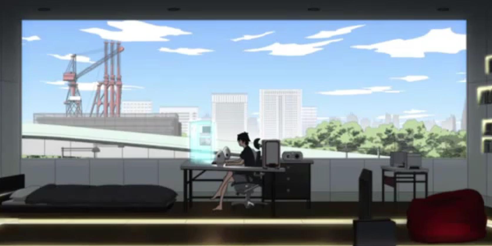

|
Estreado em 12 de abril de 2014, Mekakucity Actors, baseado em "Kakerou Project" de "Jin", conta uma das linhas de história de Shintaro, um "HikiNEET" (pessoa que não trabalha, não estuda e não sai de casa). Ene, uma garota que mora dentro de seu computador, o força a sair de casa pela primeira vez em dois anos. Após um certo evento, Shintaro conhece a "Mekakushi Dan", e acaba se tornando, a força, seu sétimo membro. |
 |